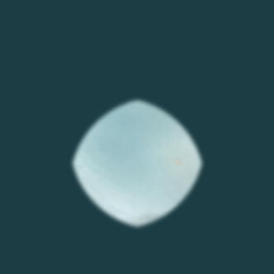
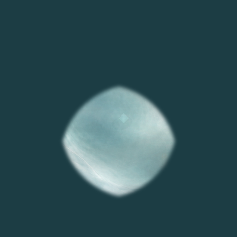
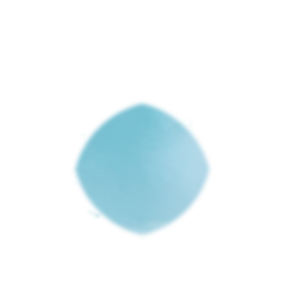
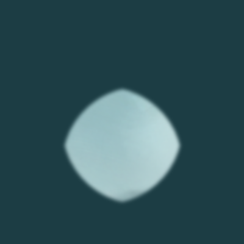
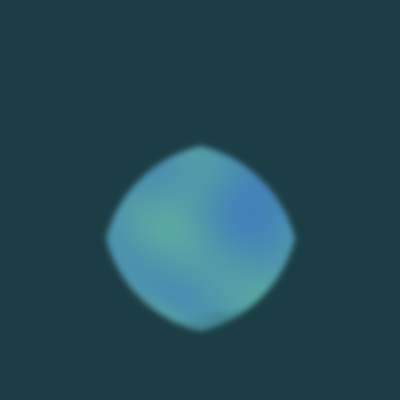
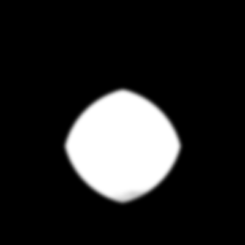
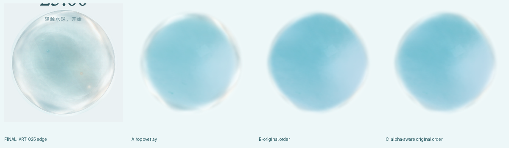
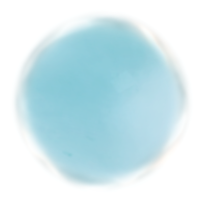
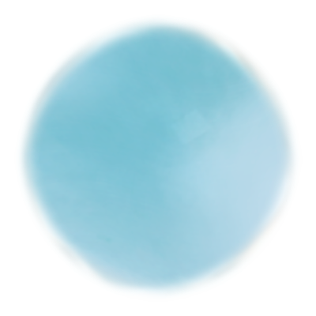
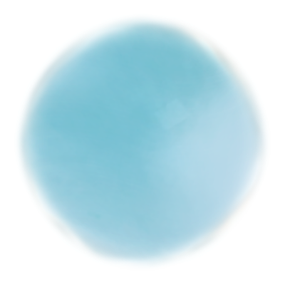

M1.5 MATERIAL-ONLY FINAL GATE
M1 internal material review · shell route preview is non-authoritative · 不改 production · 不进入 M2 · 不修改当前 carriers
M1 MATERIAL GATE · REFERENCE INTERIORS
所有 reference / current material 使用同一个 SAFE INTERIOR / inner comparison mask；只改变观察区域，不改变 Final Art RGB。outer film、core、UI、formation 和 directional pose 不进入本 Gate。



M1 INTERNAL MATERIAL FAMILY = READY FOR HUMAN REVIEW
same water family · not fog / flat cyan / generic cloud / shader blob · no obvious internal-material representation defect
same water family · not fog / flat cyan / generic cloud / shader blob · no obvious internal-material representation defect
M1 MATERIAL SOURCES · FROZEN



本轮没有调 cloudy、tint、thickness、detail，也没有换 donor 或重做 source normalization。
M2 SHELL ROUTE PREVIEW · NON-AUTHORITATIVE
只做一次 A/B/C layer-order validation。三张 preview 不关闭 M2，不修改 formal source alpha，也不改变当前 M1 material source。




FORMAL SHELL OWNERSHIP = DEFERRED_TO_M2
A 保留 membrane identity 但 ring 偏强；B/C 减少 uniform ring 但 shell identity 不足。M2 SHELL STARTING POINT = UNRESOLVED。
A 保留 membrane identity 但 ring 偏强；B/C 减少 uniform ring 但 shell identity 不足。M2 SHELL STARTING POINT = UNRESOLVED。
RESULT
CURRENT FROZEN M1 MATERIAL · STATIC PREVIEW